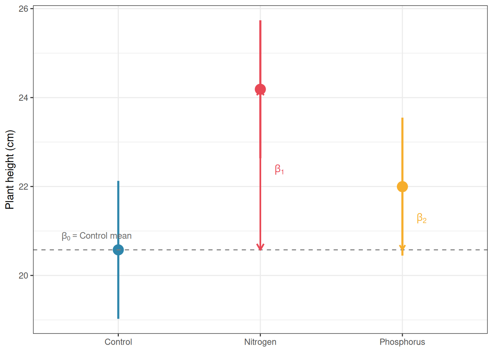

Part I introduced the idea that ANOVA is a special case of the linear model i.e. a regression where the predictors happen to be categorical rather than continuous. That claim was made quickly and without full justification, because the tools needed to appreciate it properly had not yet been developed. Now that you have worked through one-way ANOVA, multiple comparisons, factorial designs, repeated measures, and split-plot structures, the time is right to return to this connection and develop it fully.
This chapter makes the bridge between ANOVA and regression explicit, concrete, and computable. By the end, you will understand that aov() and lm() are fitting the same model, that the choice of coding scheme for categorical predictors determines what the regression coefficients mean, and that thinking in the linear model framework rather than in the ANOVA framework opens up a much richer set of analytical tools.
8.1lm() and aov(): Same Model, Different Output
8.1.1 Two Functions, One Model
R provides two functions for fitting ANOVA-style models: aov() and lm(). Students often treat them as different tools for different jobs: aov() for ANOVA and lm() for regression. This is a misconception worth correcting directly.
Both functions fit exactly the same linear model. They use the same estimation method (ordinary least squares), the same assumptions, and the same underlying mathematics. The only difference is in how they present their output: aov() summarises the fit as an ANOVA table with sums of squares, degrees of freedom, and F statistics while lm() summarises the fit as a regression table with coefficient estimates, standard errors, and t statistics.
The following code fits the same one-way ANOVA model, the fertiliser experiment from Chapter 3, using both functions and shows that the fitted values are identical:
set.seed(42)n<-20group<-factor(rep(c("Control", "Nitrogen", "Phosphorus"), each =n), levels =c("Control", "Nitrogen", "Phosphorus"))y<-c(rnorm(n, mean =20, sd =3),rnorm(n, mean =25, sd =3),rnorm(n, mean =22, sd =3))df<-data.frame(y, group)# Fit with aov()fit_aov<-aov(y~group, data =df)# Fit with lm()fit_lm<-lm(y~group, data =df)# Are the fitted values identical?# Are the residuals identical?cat("Max difference in fitted values:",max(abs(fitted(fit_aov)-fitted(fit_lm))),"\nMax difference in residuals:",max(abs(residuals(fit_aov)-residuals(fit_lm))), "\n")
Max difference in fitted values: 0
Max difference in residuals: 0
Both differences are zero (or within floating-point precision), confirming that the two functions are producing the same fit. The choice between them is purely a matter of which output format is more useful for the question at hand.
Call:
lm(formula = y ~ group, data = df)
Residuals:
Min 1Q Median 3Q Max
-8.9765 -1.4565 0.2847 2.1828 6.4986
Coefficients:
Estimate Std. Error t value Pr(>|t|)
(Intercept) 20.5758 0.7748 26.557 < 2e-16 ***
groupNitrogen 3.6113 1.0957 3.296 0.00169 **
groupPhosphorus 1.4215 1.0957 1.297 0.19974
---
Signif. codes: 0 '***' 0.001 '**' 0.01 '*' 0.05 '.' 0.1 ' ' 1
Residual standard error: 3.465 on 57 degrees of freedom
Multiple R-squared: 0.1621, Adjusted R-squared: 0.1327
F-statistic: 5.513 on 2 and 57 DF, p-value: 0.006473
The ANOVA table answers: does group membership explain a significant amount of variation in y? The F statistic and its p-value address this global question.
The regression table answers something more specific: what is the estimated mean of each group, and how does each group differ from the reference group? The coefficients and their t statistics address these pairwise questions directly.
Neither output is more correct: they are complementary views of the same fitted model. A complete analysis benefits from reading both.
8.1.3 Extracting the ANOVA Table from lm()
The full ANOVA table can be extracted from an lm() fit, confirming the equivalence explicitly:
# These produce identical ANOVA tablesanova(fit_lm)
Analysis of Variance Table
Response: y
Df Sum Sq Mean Sq F value Pr(>F)
group 2 132.38 66.190 5.5133 0.006473 **
Residuals 57 684.32 12.006
---
Signif. codes: 0 '***' 0.001 '**' 0.01 '*' 0.05 '.' 0.1 ' ' 1
Df Sum Sq Mean Sq F value Pr(>F)
group 2 132.4 66.19 5.513 0.00647 **
Residuals 57 684.3 12.01
---
Signif. codes: 0 '***' 0.001 '**' 0.01 '*' 0.05 '.' 0.1 ' ' 1
8.2 Dummy Coding, Contrast Coding, and What They Mean
8.2.1 The Coding Problem
A linear model requires numerical predictors. When a predictor is categorical, Control, Nitrogen, Phosphorus, R must convert it to numbers before fitting the model. The way this conversion is done is called a coding scheme, and the choice of scheme determines the interpretation of every coefficient in the model. This is one of the most frequently misunderstood aspects of linear models in practice.
8.2.2 Dummy Coding (Treatment Coding)
R’s default coding for unordered factors is dummy coding, also called treatment coding. One level is designated the reference level (by default, the first level alphabetically, in our example here, Control). For a factor with \(k\) levels, \(k - 1\) binary dummy variables are created, one for each non-reference level:
# beta_1 should equal Nitrogen mean minus Control meancat("Nitrogen - Control:",mean(df$y[df$group=="Nitrogen"])-mean(df$y[df$group=="Control"]), "\n")
As expected, we can see from the above ouput taht \(\beta_0\) exactly equal the Control mean and \(\beta_1\) equal Nitrogen mean minus Control mean.
8.2.3 Sum-to-Zero Coding (Effects Coding)
An alternative is sum-to-zero coding (also called effects coding or deviation coding), where the coefficients represent deviations from the grand mean rather than differences from a reference group:
Sum-to-zero coding is required for Type III sums of squares (as discussed in Section 5.4.4) and is the natural choice when you want coefficients that reflect how each group compares to the overall average rather than to a specific reference group.
8.2.4 Helmert Coding
Helmert coding compares each level to the average of the preceding levels. For three groups ordered Control, Nitrogen, Phosphorus:
\(\beta_1\): Nitrogen mean minus Control mean.
\(\beta_2\): Phosphorus mean minus the average of Control and Nitrogen.
Helmert coding is useful when the factor levels have a natural sequential order and you want to test whether each step adds explanatory power, for example, when comparing a dose-response series or an ordered treatment hierarchy.
8.2.5 The Critical Point: The \(F\) Test Is Invariant to Coding
Whatever coding scheme you choose, the overall \(F\) test for the group factor, and therefore the ANOVA table, is identical. The coding scheme only changes the interpretation of the individual regression coefficients, not the global test of whether the groups differ.
# All three coding schemes give the same F testanova(lm(y~group, data =df, contrasts =list(group =contr.treatment(3))))
Analysis of Variance Table
Response: y
Df Sum Sq Mean Sq F value Pr(>F)
group 2 132.38 66.190 5.5133 0.006473 **
Residuals 57 684.32 12.006
---
Signif. codes: 0 '***' 0.001 '**' 0.01 '*' 0.05 '.' 0.1 ' ' 1
Analysis of Variance Table
Response: y
Df Sum Sq Mean Sq F value Pr(>F)
group 2 132.38 66.190 5.5133 0.006473 **
Residuals 57 684.32 12.006
---
Signif. codes: 0 '***' 0.001 '**' 0.01 '*' 0.05 '.' 0.1 ' ' 1
The sums of squares, \(F\) values, and p-values are identical across all three. This is a reassuring property: your scientific conclusion about whether groups differ does not depend on an arbitrary choice of coding scheme.
8.2.6 A Comparison Table
Coding scheme
Intercept means
Coefficients mean
When to use
Dummy (treatment)
Reference group mean
Difference from reference
Default; when one group is a natural control
Sum-to-zero (effects)
Grand mean
Deviation from grand mean
Type III SS; no natural reference group
Helmert
Weighted grand mean
Sequential comparisons
Ordered levels; dose-response
8.3 Connecting ANOVA Tables to Regression Coefficients
8.3.1 From Coefficients to Group Means
The regression coefficients and the ANOVA table are two views of the same fitted model. Understanding the connection between them transforms the regression output from a set of abstract numbers into a direct statement about group means.
Under dummy coding, the fitted values (the model’s predictions for each observation) are simply the group means:
# Fitted values are group means under dummy codinggroup_means<-tapply(df$y, df$group, mean)print(group_means)
Control Nitrogen Phosphorus
20.57576 24.18702 21.99727
# Compare to fitted values from lm()# All plants in the same group get the same fitted valuehead(fitted(fit_lm), 10)
The residuals are the deviations of individual observations from their group mean which is exactly what we called the within-group variation in Section 1.1.3.
8.3.2 From Sums of Squares to Coefficient Tests
The \(F\) test in the ANOVA table tests whether all group coefficients are simultaneously zero i.e. whether any of \(\beta_1, \beta_2, \ldots, \beta_{k-1}\) depart from zero. The individual \(t\) tests in the regression table test each coefficient separately. These are complementary tests: the \(F\) test is the global question, the \(t\) tests are the specific pairwise comparisons with the reference group.
# The F statistic in the ANOVA table equals the square of the# t statistic for a two-group comparisonfit_two<-lm(y~group, data =df[df$group%in%c("Control", "Nitrogen"), ], contrasts =list(group =contr.treatment(2)))t_val<-coef(summary(fit_two))["group2", "t value"]f_val<-summary(aov(y~group, data =df[df$group%in%c("Control", "Nitrogen"), ]))[[1]][["F value"]][1]cat("t²:", round(t_val^2, 6),"\nF:", round(f_val, 6), "\n")
t²: 9.809521
F: 9.809521
The \(t\) statistic for a single coefficient squared equals the \(F\) statistic for the same comparison, confirming that the \(t\) test and the two-group \(F\) test are the same test expressed differently.
8.3.3 Visualising the Connection
library(ggplot2)# Compute group means and CIs from the lm() outputpred_df<-data.frame( group =levels(df$group))pred_out<-predict(fit_lm, newdata =pred_df, interval ="confidence")pred_df<-cbind(pred_df, pred_out)names(pred_df)<-c("group", "mean", "lwr", "upr")# Add coefficient annotationscoefs<-coef(fit_lm)pred_df$label<-c(expression(beta[0]),expression(beta[0]+beta[1]),expression(beta[0]+beta[2]))ggplot(pred_df, aes(x =group, y =mean, colour =group))+geom_pointrange(aes(ymin =lwr, ymax =upr), size =1, linewidth =1)+geom_hline(yintercept =coefs[1], linetype ="dashed", colour ="grey50")+annotate("text", x =0.6, y =coefs[1]+0.3, label =expression(beta[0]=="Control mean"), size =3.2, colour ="grey40", hjust =0)+annotate("segment", x =2, xend =2, y =coefs[1], yend =coefs[1]+coefs[2], arrow =arrow(length =unit(0.25, "cm"), ends ="both"), colour ="#E84855", linewidth =0.8)+annotate("text", x =2.1, y =coefs[1]+coefs[2]/2, label =expression(beta[1]), size =3.5, colour ="#E84855", hjust =0)+annotate("segment", x =3, xend =3, y =coefs[1], yend =coefs[1]+coefs[3], arrow =arrow(length =unit(0.2, "cm"), ends ="both"), colour ="#F6AE2D", linewidth =0.8)+annotate("text", x =3.1, y =coefs[1]+coefs[3]/2, label =expression(beta[2]), size =3.5, colour ="#F6AE2D", hjust =0)+scale_colour_manual(values =c("#2E86AB", "#E84855", "#F6AE2D"))+labs(x =NULL, y ="Plant height (cm)")+theme_bw()+theme(legend.position ="none")

Figure 8.1: The connection between regression coefficients and ANOVA group means under dummy coding. The intercept estimates the Control mean; the slope coefficients estimate the differences between each treatment group and the Control. Error bars show 95% confidence intervals for each group mean. Dashed line marks the Control mean (intercept)
8.4 Why Thinking in Linear Models Makes You a Better Analyst
8.4.1 The Limits of the ANOVA Mindset
The ANOVA framework, sums of squares, \(F\) tests, post-hoc comparisons, is a powerful and well-developed tradition, but it has limits that become apparent as soon as real data departs from the idealised conditions of a balanced factorial experiment.
ANOVA struggles with continuous covariates. If you want to test the effect of fertiliser while adjusting for the initial height of each plant, ANOVA has no natural way to incorporate that continuous adjustment. The linear model does: add initial height as a covariate and the model handles it seamlessly. This is ANCOVA (analysis of covariance) and it is simply a linear model with both categorical and continuous predictors.
ANOVA struggles with unbalanced designs. As Section 5.4 showed, unequal cell sizes create ambiguity in how sums of squares are computed, requiring careful choices between Type I, II, and III SS. The linear model has no such ambiguity: coefficients are estimated by ordinary least squares regardless of balance, and hypotheses are tested by comparing model fits directly.
ANOVA struggles with non-normal responses. When the response is a count, a proportion, or a survival time, the normality assumption fails structurally, not just approximately. The generalised linear model extends the linear model framework to handle these response types through a link function and a distributional family. There is no natural ANOVA equivalent.
ANOVA struggles with random effects and hierarchical data. As Chapters 6 and 7 showed, repeated measures and nested designs require careful specification of error terms which a process that becomes unwieldy with more than two levels of nesting. The linear mixed model handles more seamingly arbitrarily complex hierarchical structures as a natural extension of the linear model framework.
8.4.2 The Linear Model as a Unifying Framework
Every model discussed in this book is a linear model or a direct extension of one:
Recognising this unity is not merely intellectually satisfying but has practical consequences. It means you can use the same diagnostic tools (residual plots, Q-Q plots, leverage and influence measures) across all of these models. It means you can compare nested models using likelihood ratio tests regardless of whether they are ANOVA models, regression models, or mixed models. And it means you can extend your analyses naturally as your questions become more complex, rather than switching to an entirely different analytical tradition every time the data present a new complication.
8.4.3 Model Comparison as a General Principle
One of the most powerful tools that the linear model framework provides is model comparison: testing whether a more complex model fits the data significantly better than a simpler one. In ANOVA terms, the \(F\) test is already a model comparison: it compares the model with group effects to the model without them. But the principle generalises far beyond the \(F\) test.
# Model comparison using anova() for nested linear models# Model 0: no group effect (intercept only)# Model 1: group effect (one-way ANOVA)# Model 2: group effect plus a continuous covariateset.seed(42)df$initial_height<-rnorm(nrow(df), mean =10, sd =2)fit_m0<-lm(y~1, data =df)fit_m1<-lm(y~group, data =df)fit_m2<-lm(y~group+initial_height, data =df)# Sequential model comparisonanova(fit_m0, fit_m1, fit_m2)
Analysis of Variance Table
Model 1: y ~ 1
Model 2: y ~ group
Model 3: y ~ group + initial_height
Res.Df RSS Df Sum of Sq F Pr(>F)
1 59 816.70
2 57 684.32 2 132.38 1.1525e+30 < 2.2e-16 ***
3 56 0.00 1 684.32 1.1916e+31 < 2.2e-16 ***
---
Signif. codes: 0 '***' 0.001 '**' 0.01 '*' 0.05 '.' 0.1 ' ' 1
The output shows, for each step, whether adding the new term significantly improves the fit. This is the same logic as the ANOVA \(F\) test, but applied sequentially across a series of models of increasing complexity. It is a general and flexible tool that works for any combination of categorical and continuous predictors.
8.4.4 A Practical Recommendation
The practical implication of everything in this chapter is simple: fit your models with lm() and use anova() or car::Anova() to extract the ANOVA table when you need it, rather than treating aov() as a separate tool for a separate job. The lm() workflow gives you access to the full suite of linear model diagnostics, coefficient plots, model comparison tools, and extensions to ANCOVA and mixed models, none of which are as naturally available from aov().
The one exception is complex error-term specifications that can arise for split-plot and repeated measures designs that require explicit Error() terms. For these, aov() remains convenient, though as Part III will show, linear mixed models handle the same structures more flexibly and with fewer constraints.
The ANOVA table is a useful summary. The linear model is the foundation. Keeping this distinction clear will serve you well as your analyses become more complex.